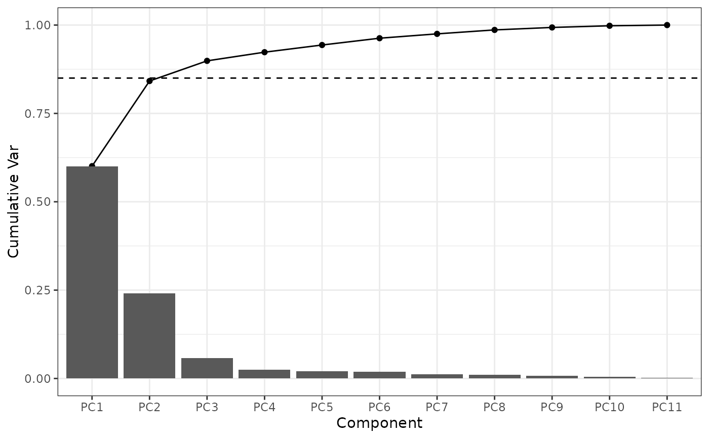
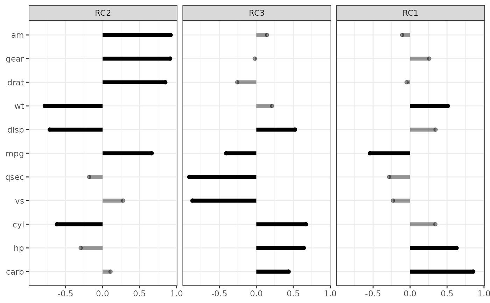
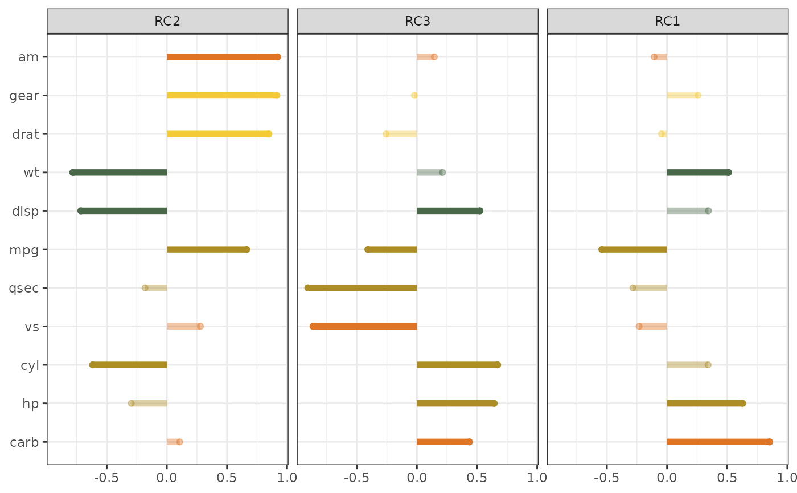

Perform principal component analysis (PCA) on specified variables and return reusable PCA results, scores, loading tables, combined data, and plots.
Usage
CreatePCAObject(
data,
VarsToReduce,
VariableCategories = NULL,
Relabel = TRUE,
minThresh = 0.85,
scale = TRUE,
center = TRUE,
Ordinal = FALSE,
numComponents = NULL,
Mode = c("classic", "omics"),
backend = c("psych", "prcomp", "irlba"),
rotate = c("varimax", "none"),
maxComponents = 20,
maxScreeComponents = 20,
VarianceFilter = NULL,
VarianceFilterMethod = c("top_n", "variance_quantile"),
MissingnessWarningThreshold = 0.2,
ParticipantMissingnessWarningThreshold = 0.2,
MissingDataStrategy = c("complete_cases", "impute", "stop"),
ImputeMethod = c("missRanger", "median"),
MaxMissingForImputation = 0.2,
ImputeRowsWithAllMissing = FALSE,
SuppressWarnings = FALSE,
imputeMethod = lifecycle::deprecated(),
Data = lifecycle::deprecated()
)Arguments
- data
A data frame containing the variables for PCA.
- VarsToReduce
Character vector of raw variable names to include in PCA.
- VariableCategories
Optional vector used to color variables in the lollipop loading plot. If supplied, it should be the same length and order as
VarsToReduce.- Relabel
Logical. If
TRUE, variable labels are used in output tables and plots when available. IfFALSE, raw variable names are used. Default isTRUE.- minThresh
Numeric threshold for cumulative variance used to select the number of components when
numComponents = NULL. Default is0.85.- scale
Logical. If
TRUE, variables are scaled by their standard deviation before PCA. Default isTRUE.- center
Logical. If
TRUE, variables are centered before PCA. Default isTRUE.- Ordinal
Logical. Placeholder retained for backward compatibility. Currently not used inside this function.
- numComponents
Optional integer number of components to retain. If
NULL, the number is selected usingminThresh.- Mode
Character. Either
"classic"or"omics"."classic"preserves the originalpsych::principal()behavior."omics"uses capped PCA logic for higher-dimensional data.- backend
Character. PCA backend to use. Options are
"psych","prcomp", and"irlba". Default is"psych"for compatibility.- rotate
Character. Rotation method. Options are
"varimax"and"none". Default is"varimax".- maxComponents
Integer. Maximum number of final components to retain in
"omics"mode whennumComponents = NULL. Default is20.- maxScreeComponents
Integer. Maximum number of components used to estimate and plot the scree curve in
"omics"mode. Default is20.- VarianceFilter
Optional numeric value for variance filtering before PCA in
"omics"mode. IfVarianceFilterMethod = "top_n", keeps the topVarianceFiltermost variable variables. IfVarianceFilterMethod = "variance_quantile", keeps variables with variance at or above the specified quantile.- VarianceFilterMethod
Character. Either
"top_n"or"variance_quantile". Default is"top_n".- MissingnessWarningThreshold
Numeric threshold for warning about variable-level missingness. Default is
0.20.- ParticipantMissingnessWarningThreshold
Numeric threshold for warning about participant-level missingness. Default is
0.20.- MissingDataStrategy
Character. Missing-data handling strategy. Options are
"complete_cases","impute", and"stop". Default is"complete_cases", which fits PCA only on rows complete across the final PCA variables and returnsNAPCA scores for incomplete rows.- ImputeMethod
Character. Missing-data imputation method used only when
MissingDataStrategy = "impute". Options are"missRanger"and"median". Default is"missRanger".- MaxMissingForImputation
Numeric value between 0 and 1. When
MissingDataStrategy = "impute", rows with missingness greater than this value across the final PCA variables are excluded from PCA scoring and receiveNAcomponent scores. Default is0.20, meaning rows can be imputed if at least 80 percent of PCA variables are observed.- ImputeRowsWithAllMissing
Logical. If
FALSE, rows with 100 percent missingness across PCA variables are not imputed even ifMaxMissingForImputation = 1. Default isFALSE.- SuppressWarnings
Logical. If
TRUE, suppresses PCA-specific warning messages from this function. Default isFALSE.- imputeMethod
Deprecated (since 19.15.0). Use
ImputeMethodinstead. If supplied, it setsImputeMethodand usesMissingDataStrategy = "impute"unlessMissingDataStrategywas explicitly set.- Data
Deprecated (since 19.15.0). Use
datainstead.
Value
A list with the following elements:
- p_scree
A ggplot scree and cumulative variance plot.
- pcaresults
The PCA result object. In
"classic"mode this is apsych::principal()result afterpsych::fa.sort(). In"omics"mode with"prcomp"or"irlba", this is a harmonized list containing loadings, scores, variance information, backend, mode, and rotation.- LoadingTable
A data frame of component loadings with raw variable names, labels, and duplicate-safe plot labels.
- Scores
A data frame of component scores aligned to the original row order of
Data. Rows not used for PCA scoring receiveNAscores.- CombinedData
The original input data with component scores appended.
- Lollipop
A ggplot lollipop loading plot.
- ScaleParams
A list containing centering and scaling parameters.
- VarsUsed
Character vector of variables actually used in PCA after preprocessing.
- VarianceTable
A variance table used for optional omics variance filtering, or
NULL.- Preprocessing
A list documenting variables dropped during preprocessing, missingness summaries, rows used for PCA, rows excluded from PCA, and rows imputed.
- Mode
The PCA mode used.
- Backend
The PCA backend used.
- Center
Logical flag indicating whether centering was used.
- Scale
Logical flag indicating whether scaling was used.
Details
The default "classic" mode preserves the original psych::principal()
workflow for compatibility with existing SciDataReportR analyses. The
optional "omics" mode is designed for high-dimensional data such as
proteomics, metabolomics, flow cytometry, FACS, transcriptomics, and other
settings where the number of variables may be large relative to the number
of participants.
Missing data are not imputed by default. With the default
MissingDataStrategy = "complete_cases", PCA is fit using only rows that
are complete across the final PCA variables, and rows with missing PCA inputs
receive NA component scores in Scores and CombinedData. To impute
missing values, set MissingDataStrategy = "impute" explicitly and choose
an imputation method with ImputeMethod.
The function uses raw variable names internally, but by default uses variable labels in human-facing outputs when labels are available. Variables with zero or undefined standard deviation after preprocessing are dropped automatically with a warning so PCA can continue without manual preprocessing.
Examples
PCA <- CreatePCAObject(
data = mtcars,
VarsToReduce = names(mtcars),
numComponents = 3
)
PCA_imputed <- CreatePCAObject(
data = mtcars,
VarsToReduce = names(mtcars),
numComponents = 3,
MissingDataStrategy = "impute",
ImputeMethod = "median",
MaxMissingForImputation = 0.20
)
PCA_raw_names <- CreatePCAObject(
data = mtcars,
VarsToReduce = names(mtcars),
Relabel = FALSE,
numComponents = 3
)
PCA_omics <- CreatePCAObject(
data = mtcars,
VarsToReduce = names(mtcars),
Mode = "omics",
backend = "prcomp",
maxComponents = 5,
maxScreeComponents = 5
)
#> Warning: STATS is longer than the extent of 'dim(x)[MARGIN]'
# Display the scree plot from the returned object
PCA$p_scree

# Lollipop-style loading plot of the component loadings
PCA$Lollipop
#> Warning: Using alpha for a discrete variable is not advised.

# Color the lollipop loadings by a variable grouping
PCA_grouped <- CreatePCAObject(
data = mtcars,
VarsToReduce = names(mtcars),
VariableCategories = c("Performance", "Performance", "Size", "Performance",
"Drivetrain", "Size", "Performance", "Config",
"Config", "Drivetrain", "Config"),
numComponents = 3
)
PCA_grouped$Lollipop
#> Warning: Using alpha for a discrete variable is not advised.
